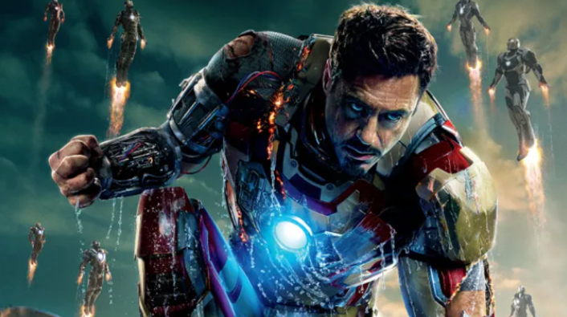
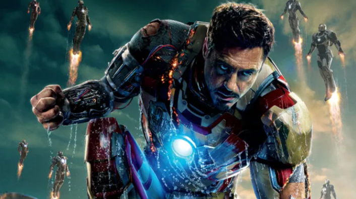

Incógnita em Torno do Futuro do Homem de Ferro Abala Fãs e Universo Cinematográfico Marvel
São Paulo, 9 de Agosto de 2023 — O futuro do icônico super-herói Homem de Ferro, interpretado por Robert Downey Jr. no Universo Cinematográfico Marvel (UCM), está envolto em incertezas, provocando especulações e preocupações entre os fãs devotos da franquia.Após o emocionante desfecho de "Vingadores: Ultimato" em 2019, muitos fãs acreditaram que a jornada de Tony Stark, também conhecido como Homem de Ferro, tinha chegado a um final trágico e concluído sua trajetória dentro do UCM. No entanto, os recentes boatos e debates têm sugerido a possibilidade de seu retorno, alimentando a esperança e a ansiedade dos fãs.
A especulação foi intensificada por comentários enigmáticos feitos por membros do elenco e da equipe criativa da Marvel Studios. Além disso, vazamentos não confirmados têm circulado nas redes sociais, sugerindo que Tony Stark pode fazer uma aparição em futuros filmes ou séries da Marvel.
Essas incertezas têm dividido os fãs e gerado debates fervorosos nas redes sociais e fóruns de discussão. Enquanto alguns estão entusiasmados com a possibilidade de um retorno do Homem de Ferro, outros expressam preocupação sobre a coesão da narrativa e a integridade dos personagens, temendo que sua ressurreição possa desvalorizar os eventos dramáticos de "Vingadores: Ultimato".
O criador do UCM, Kevin Feige, tem mantido silêncio sobre o assunto, alimentando ainda mais as especulações. A dúvida em torno do destino de um dos super-heróis mais queridos e emblemáticos da franquia está deixando os fãs ansiosos e divididos quanto às possíveis implicações para o universo cinematográfico que tanto amam.
Enquanto os fãs esperam por um esclarecimento oficial da Marvel Studios, a incerteza em relação ao Homem de Ferro deixa uma sombra sobre o futuro da franquia e demonstra como a ligação emocional dos fãs com os personagens pode influenciar suas expectativas e preocupações em torno das narrativas futuras.